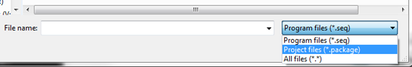
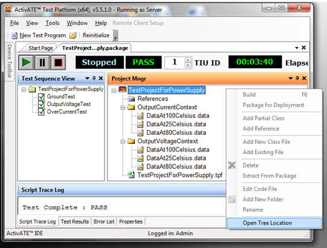
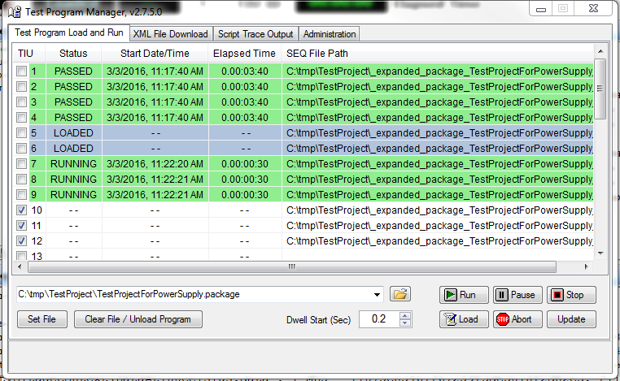

Both ActivATE IDE and Test Program Manager are able to open, expand and run a test encapsulated in a package file. ".package" is now a recognized choice as a valid project type, besides ".seq" when ActivATE projects are browsed.

ActivATE IDE loads and runs a package file still displaying the Test Sequence View, and the Project Manager View. Due to the fact that the source files are not available, they will not be displayed. However, Project Manager View allows the user to locate the expanded package folders using "Open Tree Location" in its context menu:

Test Program Manager allows the user to set, load and run .package files on any slot. The expansion action occurs at loading time. The expansion folder of a previous load action is not recreated if the package file content has not been changed.
This is the view of Test Program Manager loading and running simultanously the same package file on different slots:

Other links:
Introduction Data Files In Project Package Creation
Astronics Test Systems
Last updated on 2/27/16 I. Zolog